리눅스마스터-2급 (2012-06-11 기출문제)
1과목: 리눅스 운영 및 관리
1. 다음 중 리눅스의 각종 시스템 설정 파일들이 저장되는 기본 디렉토리로 알맞은 것은?
- /etc
- /usr
- /var
- /lib
(정답률: 83%)

2. chmod 명령어의 옵션 중 디렉토리 안의 파일까지 모두 접근권한을 바꿀 때 사용하는 옵션으로 알맞은 것은?
- -c
- -R
- -d
- -f
(정답률: 82%)
3. 다음과 같이 명령을 수행했을 때의 설명으로 알맞은 것은?
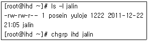
- posein이 ihd로 바뀐다.
- yuloje가 ihd로 바뀐다.
- jalin이 ihd로 바뀐다.
- 해당 명령은 오류로 실행되지 않는다.
(정답률: 63%)
4. 다음 중 터미널(Terminal), 프린터와 같은 장치 파일에 부여되는 파일 속성 문자로 알맞은 것은?
- d
- l
- b
- c
(정답률: 51%)
5. umask 명령의 결과가 다음과 같은 경우 관련 설명으로 틀린 것은?
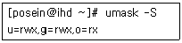
- 파일을 생성하면 권한이 rw-rw-r--가 된다.
- 디렉토리를 생성하면 권한이 rwxrwxr-x가 된다.
- 기타 사용자의 권한을 없애려면 “umask u=rwx,g=rw,o=”라고 설정하면 된다.
- 설정된 umask의 값은 775이다.
(정답률: 44%)
6. 다음 중 리눅스의 저널링 파일시스템이 아닌 것은?
- XFS
- JFS
- xiafs
- Reiserfs
(정답률: 51%)
7. 다음 중 파일 시스템 점검 명령인 fsck와 가장 관계가 밀접한 파일로 알맞은 것은?
- /etc/fstab
- /etc/login.defs
- /etc/sysctl.conf
- /etc/inittab
(정답률: 79%)
8. 다음 명령 수행시 파일시스템 유형을 판단할 수 없을 때 생성되는 파일시스템으로 알맞은 것은?
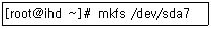
- ext
- minix
- ext2
- ext3
(정답률: 52%)
9. df 명령어의 옵션 중 파일 시스템의 유형을 출력 해주는 옵션으로 알맞은 것은?
- -i
- -t
- -T
- -P
(정답률: 57%)
10. bash 쉘에서 현재 설정된 모든 환경변수 값을 확인하는 명령으로 알맞은 것은?
- printenv
- export
- echo
- pwd
(정답률: 41%)
11. 다음은 /home 영역에 Quota를 설정하는 순서이다. 빈칸에 들어갈 내용으로 알맞은 것은?
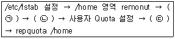
- (ㄱ) Quota 파일로 변환 - (ㄴ) Quota 파일 생성 - (ㄷ) Quota 시작
- (ㄱ) Quota 시작 - (ㄴ) Quota 파일 생성 - (ㄷ) Quota 파일로 변환
- (ㄱ) Quota 파일 생성 - (ㄴ) Quota 파일로 변환 - (ㄷ) Quota 시작
- (ㄱ) Quota 파일 생성 - (ㄴ) Quota 시작 - (ㄷ) Quota 파일로 변환
(정답률: 68%)
12. Borne 쉘에서 PATH 변수는 무엇으로 구분되는가?
- 콜론(:)
- 세미콜론(;)
- 컴마(,)
- 슬래시(/)
(정답률: 76%)
13. 다음 중 현재 터미널 설정을 변경하는 명령으로 알맞은 것은?
- stty
- sleep
- source
- sync
(정답률: 75%)
14. bash 쉘에서 표준 출력을 파일 끝에 덧붙이는(APPEND) 출력 리다이렉션 기호로 알맞은 것은?
- >
- >>
- <
- ?
(정답률: 65%)
15. bash 쉘에 대한 설명으로 틀린 것은?
- 명령행 편집기능을 지원하지 않는다.
- POSIX와 호환된다.
- GNU프로젝트에 의해서 만들어졌다.
- Bourne-Again Shell이다.
(정답률: 75%)
16. alias ll='ls –al'로 설정된 ll 별명(alias)만을 제거하는 명령으로 알맞은 것은?
- unalias ll
- unalias -a ll
- unalias ls -al
- unalias
(정답률: 75%)
17. Bash 쉘의 히스토리(history) 기능에서 기억하는 명령의 개수를 0으로 설정 할 때 사용하는 환경 변수로 알맞은 것은?
- HISTSIZE
- HISTFILE
- HISTIGNORE
- HISTCONTROL
(정답률: 79%)
18. Bash 쉘의 히스토리(History) 기능에서 해당 문자열로 시작하는 가장 최근 명령을 사용하려고 할 때 사용하는 쉘 예약어로 알맞은 것은?
- !문자열
- !?문자열[?]
- ^문자열1^문자열2^
- !!
(정답률: 57%)
19. 다음은 프로세스 생성과정을 나타낸 것이다. ( 괄호 )안에 들어갈 내용으로 알맞은 것은?
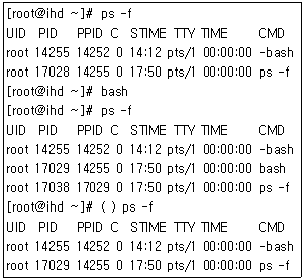
- fork
- exec
- kernel
- init
(정답률: 55%)
20. 다음 중 좀비 프로세스를 뜻하는 프로세스 상태 코드로 알맞은 것은?
- S
- Z
- D
- X
(정답률: 88%)
21. 다음 중 키보드에서 [CTRL] + [C]를 통한 인터럽트시 발생하는 시그널번호와 이름으로 알맞은 것은?
- 1, HUP
- 2, INT
- 3, QUIT
- 9, KILL
(정답률: 55%)
22. 다음과 같이 작업이 대기중이다. 2번 작업을 foreground로 수행하고자 할 때 알맞은 것은?
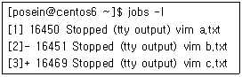
- bg !2
- bg %2
- fg !2
- fg %2
(정답률: 77%)
23. 다음 중 데몬(Daemon)에 대한 설명으로 틀린 것은?
- standalone방식의 데몬들은 보통 부팅시 실행 된다.
- standalone방식의 데몬들은 클라이언트의 요청이 들어오면 메모리에 상주한다.
- inet daemon은 standalone방식으로 실행되어 메모리에 상주한다.
- inet daemon이 관리하는 데몬들은 tcp_wrapper를 이용하여 접근제어를 한다.
(정답률: 48%)
24. 다음 중 ps 명령어를 사용하여 프로세스 간 상속 관계를 트리구조로 출력할 때 사용하는 옵션으로 알맞은 것은?
- e
- -e
- f
- -f
(정답률: 31%)
25. ps 명령으로 서버를 점검하는 중에 현재 사용하지 않는 posein이라는 계정이 로그인 되어 있을 것을 발견하였다. 다음 중 계정을 삭제하기 위한 로그아웃 절차로 올바른 것은?
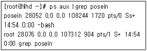
- kill -9 posein
- kill -9 28⑤2
- kill -15 posein
- kill -15 28⑤2
(정답률: 61%)
26. 다음 중 현재 시스템에 동작중인 CPU 사용량을 실시간으로 모니터링 할 수 있는 도구는 무엇인가?
- top
- pstree
- ps
- nice
(정답률: 84%)
27. 다음 중 프로세스의 우선 순위를 변경할 때 사용하는 명령으로 알맞은 것은?
- top
- pstree
- ps
- nice
(정답률: 84%)
28. 일반계정 posein은 홈 디렉토리의 파일을 백업하기 위해 스크립트를 작성하였다. 다음 중 posein 계정 사용자가 백업 스크립트를 주기적으로 실행하기 위해 사용해야할 명령으로 알맞은 것은?
- cron
- crond
- crontab
- cron.d
(정답률: 69%)
29. vi 편집기에서 커서의 이동 명령으로 틀린 것은?
- h : 커서를 한 칸 왼쪽으로 이동
- j : 커서를 한 줄 아래로 이동
- k : 커서를 한 줄 위로 이동
- l : 커서를 한 칸 대각선으로 이동
(정답률: 78%)
30. vi 편집기에서 입력모드로 전환하는 명령으로 틀린 것은?
- i : 커서 위치 앞에서 삽입
- a : 커서 위치 뒤에서 삽입
- o : 현재 줄의 아래에 전개
- O : 현재 줄에 삽입
(정답률: 71%)
31. emacs 편집기에 대한 설명으로 틀린 것은?
- 명령모드 편집기이다.
- 질의 및 치환 명령을 가지고 있다.
- 새로운 사용자들을 위한 튜토리얼(tutorial)을 지원한다.
- 유니코드를 지원한다.
(정답률: 46%)
32. emacs 편집기에서 커서 이동 명령으로 틀린 것은?
- <Ctrl + a> : 라인 처음으로 이동
- <Ctrl + e> : 라인 끝으로 이동
- <Ctrl + x> : 한 페이지 앞으로 이동
- <Ctrl + v> : 한 화면 뒤로 이동
(정답률: 42%)
33. vi 편집기에서 편집 버퍼 이동 명령으로 틀린 것은?
- <Ctrl + G> : 한 화면 아래로 이동
- <Ctrl + B> : 한 화면 위로 이동
- <Ctrl + D> : 반 화면 아래로 이동
- <Ctrl + U> : 반 화면 위로 이동
(정답률: 41%)
34. vi 편집기 Ex 모드에서 마지막 라인으로 이동하는 명령으로 알맞은 것은?
- 0
- $
- 1
- q
(정답률: 72%)
35. 다음 중 tar에 대한 설명으로 틀린 것은?
- GNU 아카이브(Archive) 유틸리티이다.
- 이전에 생성된 아카이브에서 추가로 파일을 추가한다.
- 묶음과 압축이 동시에 실행된다.
- 이전에 생성된 아카이브에서 파일을 추출할 수 없다.
(정답률: 73%)
36. 아래와 동일한 결과를 출력하는 명령으로 알맞은 것은?
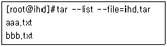
- tar -tf ihd.tar
- tar -cf ihd.tar
- tar -xf ihd.tar
- tar -zf ihd.ta
(정답률: 49%)
37. gzip의 압축 레벨에 대한 설명으로 틀린 것은?
- -1 : 가장 빠른 압축 방법이다.
- -9 : 가장 느린 압축 방법이지만 최대한 압축한다.
- -6 : 기본 압축 레벨이다.
- -10 : 가장 빠르면서 최대한 압축한다.
(정답률: 75%)
38. 다음 중 gzip명령어의 옵션에 대한 설명으로 틀린 것은?
- -d : 압축을 푼다.
- -l : 현재 압축된 파일의 내용을 보여준다.
- -v : 압축 진행 상황을 보여준다.
- -t : 묶음 파일을 보여준다.
(정답률: 47%)
39. MSDOS의 PKZIP과 호환되고 Unix, Windows NT, Minix, Mac에서 사용되는 아카이브(archive)압축 유틸리티로 알맞은 것은?
- zip
- gzip
- tar
- gunzip
(정답률: 56%)
40. 다음 중 ‘ihd.zip’으로 압축되어 있는 파일을 압축 해제하는 유틸리티로 알맞은 것은?
- unzip
- tar
- gzip
- gunzip
(정답률: 67%)
41. gzip으로 압축한 'ihd.gz' 파일을 압축 해제하는 명령 2가지로 알맞은 것은?
- gunzip, gzip -d
- gunzip, bunzip2
- unzip, bunzip2
- gunzip, unzip
(정답률: 66%)
42. 다음 중 아카이브(archive) 확장자 설명이 틀린 것은?
- .Z : compress로 압축된 아카이브이다.
- .bz2 : bzip2로 압축된 아카이브이다.
- .zip : gzip로 압축된 아카이브이다.
- .tar.gz : gzip을 사용하여 압축된 tar 아카이브이다.
(정답률: 63%)
43. 다음 프린터 연결 방식 중 윈도우 시스템에 프린터가 공유되어 있을 경우 가장 관계가 깊은 것은 무엇인가?
- Remote lpd
- samba
- Netware
- JetDirect
(정답률: 77%)
44. 콘솔상에서 명령을 입력하여 프롬프트가 나타나면 별도의 명령어로 프린터의 상태 등을 점검할 수 있는 도구는 무엇인가?
- lpc
- lpq
- lprm
- lpr
(정답률: 55%)
45. 다음 중 lpr 명령어를 출력할 때 문서의 매수를 지정할 때 사용하는 옵션으로 알맞은 것은?
- -P
- -p
- -#
- -r
(정답률: 73%)
46. 다음에서 설명하는 프로그램으로 알맞은 것은?
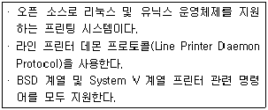
- LPRng
- cups
- samba
- ALSA
(정답률: 58%)
47. 다음 중 리눅스 커널 2.6.x 버전의 표준 사운드 드라이버인 ALSA를 제어하는 명령으로 알맞은 것은?
- aplay
- alsamixer
- alsactl
- amixer
(정답률: 63%)
48. 다음 중 포스트 스크립트 파일을 일반 프린터에서 출력하고자 할 때 설치해야할 프로그램으로 알맞은 것은?
- xmms
- gimp
- sane
- ghostscript
(정답률: 52%)
2과목: 리눅스 활용
49. KDE 데스크톱에 대한 설명으로 틀린 것은?
- QT 라이브러리를 기반으로 한다.
- 리눅스 전용 데스크톱 환경이다.
- 파일매니저, 윈도 매니저 도움말 시스템, 설정 시스템과 각종 애플리케이션들의 집합체이다.
- 패널, 태스크바, 데스크톱으로 구성되어 있다.
(정답률: 44%)
50. 리눅스의 대표적인 MP3 플레이어 중 하나로, MP3와 OGG를 재생할 수 있고 Winamp와 GUI가 유사한 플레이어로 알맞은 것은?
- xv
- XMMS
- GIMP
- Mplayer
(정답률: 53%)
51. 다음 중 동영상 플레이어 중 하나인 MTV의 특징으로 틀린 것은?
- mpeg 동영상이나 Video-CD를 재생할 수 있다.
- 특별한 장치의 필요 없이 X 윈도만 가능하면 작동한다.
- 윈도우즈에서도 많이 사용되는 프로그램으로 리눅스 버전에서는 풀스크린 지원까지 가능 하다.
- 고품질의 비디오 화면을 제공하며 트루컬러(9bit에서 3bit까지)와 PseudoColor를 지원한다.
(정답률: 50%)
52. 다음 중 X window와 관련된 런레벨로 알맞은 것은?
- init 0
- init 6
- init 5
- init 3
(정답률: 70%)
53. 다음 중 윈도 매니저의 종류로 틀린 것은?
- twm
- AfterStep
- Enlightenment
- GNOME
(정답률: 55%)
54. RedHat 계열의 리눅스와 국내 배포판에 포함된 패키지로 사용자에게 X 서버 설정을 안내하는 메뉴 구동 프로그램으로 알맞은 것은?
- Xconfigurator
- Xview
- Xaw
- X toolkit
(정답률: 55%)
55. 인텔 x86계열의 유닉스 계열 운영체계에서 동작하는 X서버는 무엇인가?
- QT
- GTK
- XFree86/Xorg
- XView
(정답률: 74%)
56. GTK+(GimpTool Kit +) 라이브러리를 기반으로 만들어졌으며, 패널, 표준 데스크톱, 응용프로그램, 그리고 그 외의 다른 프로그램들과 서로 간에 협동적으로 동작할수 있도록 지원하는 데스크탑 환경은 무엇인가?
- windowMaker
- KDE
- GNOME
- AfterStep
(정답률: 69%)
57. 다음 중 유즈넷에 대한 설명으로 틀린 것은?
- 네트워크상으로 정보를 나누고, 토론하는 자유 게시판 서비스로, 공통의 주제별로 모여 참여 할 수 있는 토론 시스템이다.
- 유즈넷 서비스를 위해 뉴스그룹이 존재하며 한 뉴스그룹에는 많은 수의 뉴스서버가 포함 된다.
- 유즈넷을 이용하기 위해서는 Slrn이나 Pine 같은 텍스트용 뉴스리더나, Pan, Mozilla 같은 X 윈도우용 뉴스리더 프로그램이 필요하다.
- 국내외에서 무료로 뉴스리더 프로그램을 통해 가입 및 이용이 가능하다.
(정답률: 37%)
58. 다음 중 하나의 클래스 C 네트워크를 두 개의 네트워크로 구성할 경우 서브넷 마스크로 알맞은 것은?
- 255.255.255.0
- 255.255.255.64
- 255.255.255.128
- 255.255.255.196
(정답률: 68%)
59. 다음 중 프로토콜 번호가 정의되어 있는 파일의 경로와 파일명으로 알맞은 것은?
- /etc/services
- /dev/services
- /etc/protocols
- /bin/protocols
(정답률: 58%)
60. 다음 중 서비스의 이름과 연결되어 있는 기본 포트번호가 잘못 짝지워진 것은?
- gopher : 70
- http : 88
- ftp : 21
- telnet : 23
(정답률: 72%)
61. 다음 중 밑줄 친 부분에 대한 설명을 순서로 알맞게 나열한 것은?
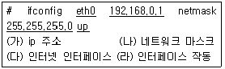
- (다)-(가)-(나)-(라)
- (다)-(나)-(가)-(라)
- (라)-(가)-(나)-(다)
- (라)-(가)-(다)-(나)
(정답률: 72%)
62. 다음 FTP의 명령어 중 hash에 대한 설명으로 알맞은 것은?
- 전송할 데이터의 타입을 보여준다.
- 데이터의 전송의 크기 및 전송 경로를 보여 준다.
- 데이터를 전송할 때 # 문자를 진행도에 따라 표시할지의 여부를 결정한다.
- 연결할 서버의 위치를 찾아가는데 결정적인 영향을 미친다.
(정답률: 65%)
63. 다음 중 네트워크 인터페이스의 확인, 활성 및 비활성, 설정확인 등을 위해 사용하는 명령으로 알맞은 것은?
- ifconfig
- Xconfig
- netstate
- nslookup
(정답률: 63%)
64. IAB의 공문서 간행물로 컴퓨터 통신 및 인터넷과 관련된 상세한 절차와 주로 기술적인 분야의 표준규격을 제시하는 문서로 알맞은 것은?
- HOW-TO
- man
- RFC
- FAQ
(정답률: 63%)
65. IP 주소를 직접 입력하지 않고 부팅 시 서버로부터 받아 오는데 사용되는 프로토콜은?
- PPP
- IGMP
- DHCP
- ICMP
(정답률: 71%)
66. 다음 중 루프백(Loopback) 인터페이스에 대한 설명으로 틀린 것은?
- 일반적으로 IP 주소 127.0.0.1을 사용한다.
- 루프백 인터페이스를 이용할 경우 네트워크에 연결되어 있지 않아도 네트워크 소프트웨어를 테스트 할 수 있다.
- 물리적인 네트워크 인터페이스가 장착되어 있어야 부여할 수 있다.
- 리눅스에서 디바이스 명이 ‘lo’로 표시된다.
(정답률: 66%)
67. TCP와 UDP 프로토콜에 대한 설명으로 틀린 것은?
- TCP는 패킷의 교환을 근간으로 하는 인터넷 프로토콜(IP, Internet Protocol)을 기반으로 작동한다.
- TCP는 데이터를 주고 받을 양단 간에 먼저 연결을 설정하고 설정된 연결을 통해 양방향으로 데이터를 전송한다.
- 데이터의 신뢰성이 중요하지 않을 경우 UDP를 사용하는 것이 좋다.
- UDP는 메시지가 보내진 순서를 보장하기 위해 순서정렬을 재조립 한다.
(정답률: 65%)
68. 인터넷 서비스 업체로부터 직접 회선을 할당받아 자신의 컴퓨터를 인터넷과 연결하는 방법으로 각 컴퓨터마다 고유한 IP 주소를 할당받는 인터넷 접속 환경은?
- 전용선
- SLIP/PPP
- 모뎀
- 전화접속어댑터
(정답률: 68%)
69. 다음 중 게이트웨이(Gateway)에 대한 설명으로 알맞은 것은?
- 두 개의 근거리 통신망을 상호 접속해 주는 통신망 연결장치 이다.
- 디지털 방식의 통신선로에서 전송신호를 재생하여 전달하는 전자통신 장치이다.
- 프로토콜이 다른 통신망을 상호 접속하게 하기 위한 장치이다.
- LAN(근거리통신망)을 연결해주는 장치이다.
(정답률: 61%)
70. 다음 중 ping 명령어 옵션에 대한 설명이 올바른 것은?
- -s : 보낼 패킷 수 지정
- -q : 종합 결과 출력
- -i : 패킷 사이즈 지정
- -c : 지연 시간 설정
(정답률: 39%)
71. 다음 중 Samba에 대한 설명으로 틀린 것은?
- SMB(Sever Message Block) 프로토콜을 구현한 프로그램이다.
- 여러 대의 PC 간 파일이나 프린터를 공유할 수 있다.
- 사무실내 PC 시간 설정을 동기화 시킬 수 있다.
- 리눅스와 윈도우 간에 디스크를 공유할 수 있다.
(정답률: 61%)
72. 다음에서 설명하는 것으로 알맞은 것은?
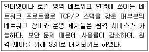
- telnet
- sendmail
- ftp
- 원격데스크톱
(정답률: 78%)
73. 리눅스에서 DNS 서버를 등록하는 파일로 알맞은 것은?
- /etc/hosts
- /etc/resolv.conf
- /etc/passwd
- /etc/named.conf
(정답률: 69%)
74. 정보를 일정크기로 분할하고 각각에 송수신 주소를 부가하여 만든 데이터 블록을 의미하는 것으로 알맞은 것은?
- 프로토콜
- 패킷
- 데이터 헤더
- 세션
(정답률: 69%)
75. 다음에서 설명하는 인터넷 서비스의 종류로 알맞은 것은?
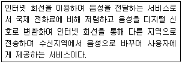
- www
- ftp
- Internet Phone
- 인터넷 채팅
(정답률: 79%)
76. 프로토콜의 기본 구성요소 중 설명이 틀린 것은?
- 구문(syntax) : 구문은 데이터의 구조나 형식을 가리키는 것으로 데이터가 어떤 순서로 표현 되는지 나타낸다.
- 의미(Semantics) : 데이터를 구성하는 각 비트가 의미하는 뜻을 나타낸다.
- 타이밍(Timing) : 언제 데이터를 얼마나 빨리 전송 할것인가에 대한 특성을 정의한다.
- 인터럽트(interrupt) : 경로상 모든 노드에서 노드의 정규 버퍼가 모두 점유되어 고갈된 상태에서도 지체없이 처리되고 출력되어야 한다.
(정답률: 67%)
77. 다음 중 클러스터 파일시스템이 아닌 것은?
- Ceph
- GlusterFS
- GFS
- XFS
(정답률: 46%)
78. 다음에서 설명하는 리눅스의 분야로 알맞은 것은?
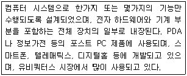
- 리눅스 서버/클라이언트 분야
- 리눅스 데스크탑 분야
- 리눅스 임베디드 분야
- 리눅스 클러스터링 분야
(정답률: 73%)
79. 다음에서 설명하는 것으로 알맞은 것은?
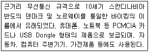
- Bluetooth
- Protocol
- Wiki
- CDMA
(정답률: 76%)
80. 블루투스3.0 기술에서 지원하는 최대 데이터 전송 속도로 알맞은 것은?
- 512Mbps
- 24Mbps
- 3Mbps
- 5Mbps
(정답률: 56%)
설명: "/etc" 디렉토리는 리눅스 시스템에서 각종 시스템 설정 파일들이 저장되는 기본 디렉토리입니다. 예를 들어, 네트워크 설정, 사용자 계정 설정, 서비스 설정 등이 이 디렉토리에 저장됩니다. 이 디렉토리는 시스템 관리자가 시스템을 구성하고 관리하는 데 매우 중요한 역할을 합니다.